Sonya Winner Rug Studio · London · 2026
Unfiltered
Lauren Super
Chapter one
It begins in the garden.
Botanical paintings: Cape Town sunsets, hibiscus and cosmos set against deep black grounds, made as survival and mindfulness during a difficult time. They stand for a natural beauty the modern world is losing.
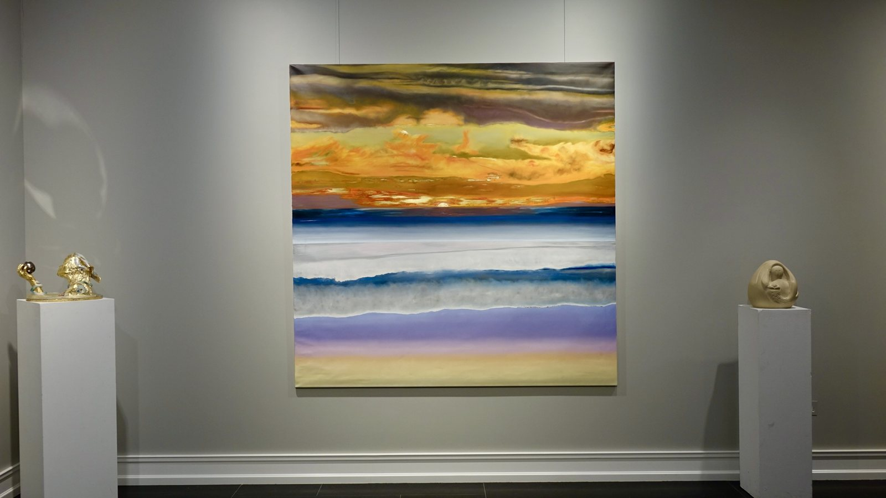
Oil on canvas
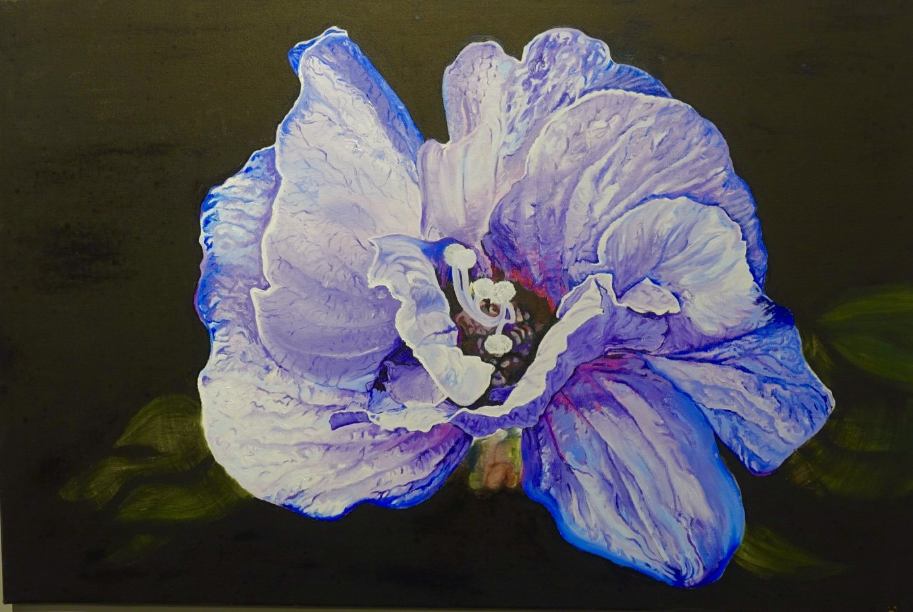
Oil on canvas
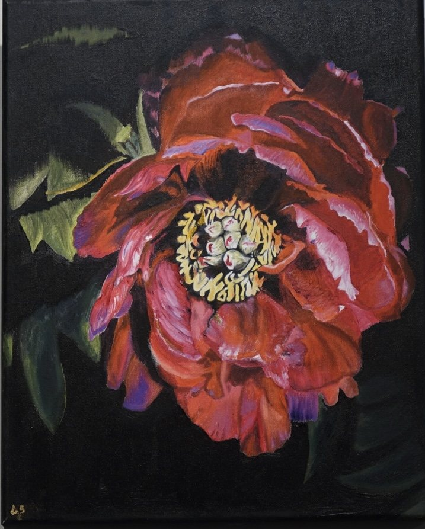
Oil on canvas
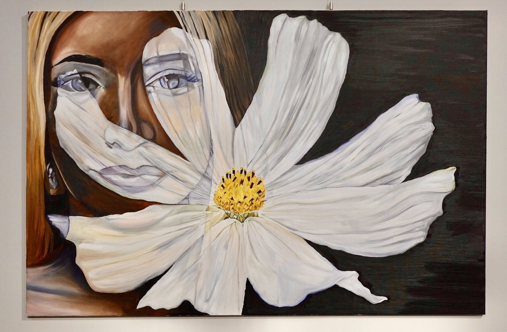
Oil on canvas. The first face in the show, already behind something.
Chapter two
Then it darkens.
Masks drawn from her African heritage. Carved by hand, in stone and ceramic, and set down here the way a collection sets down its specimens.
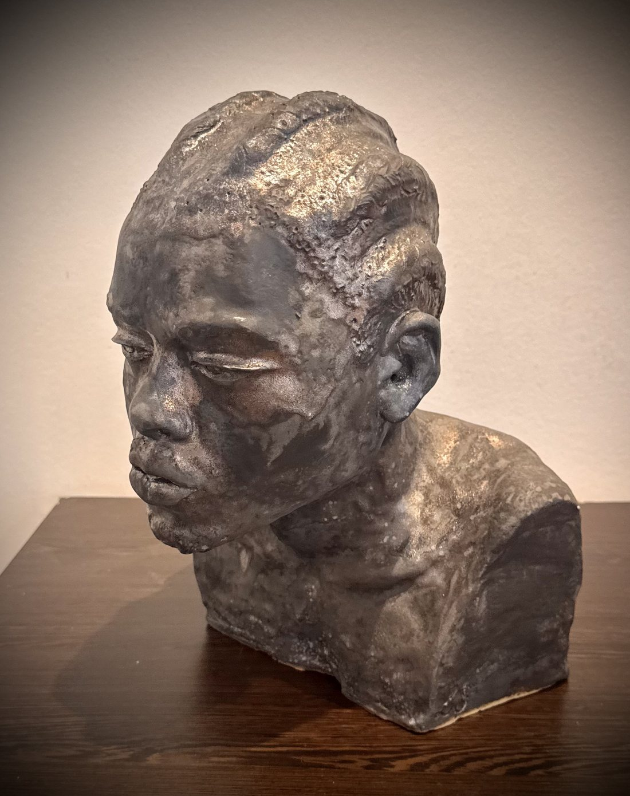
Hand carved stone
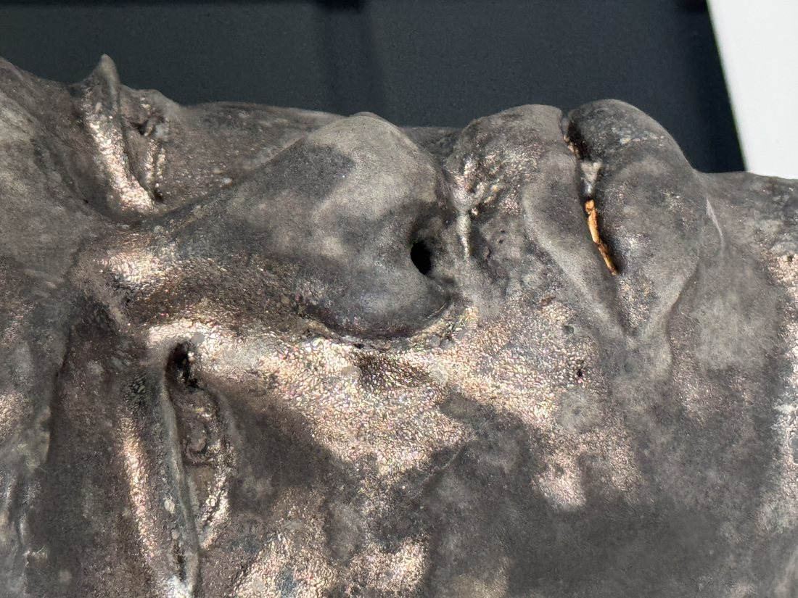
Hand carved stone
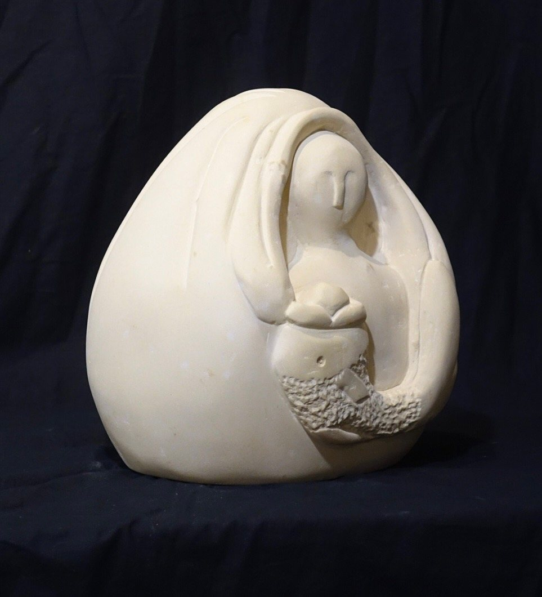
Hand carved limestone
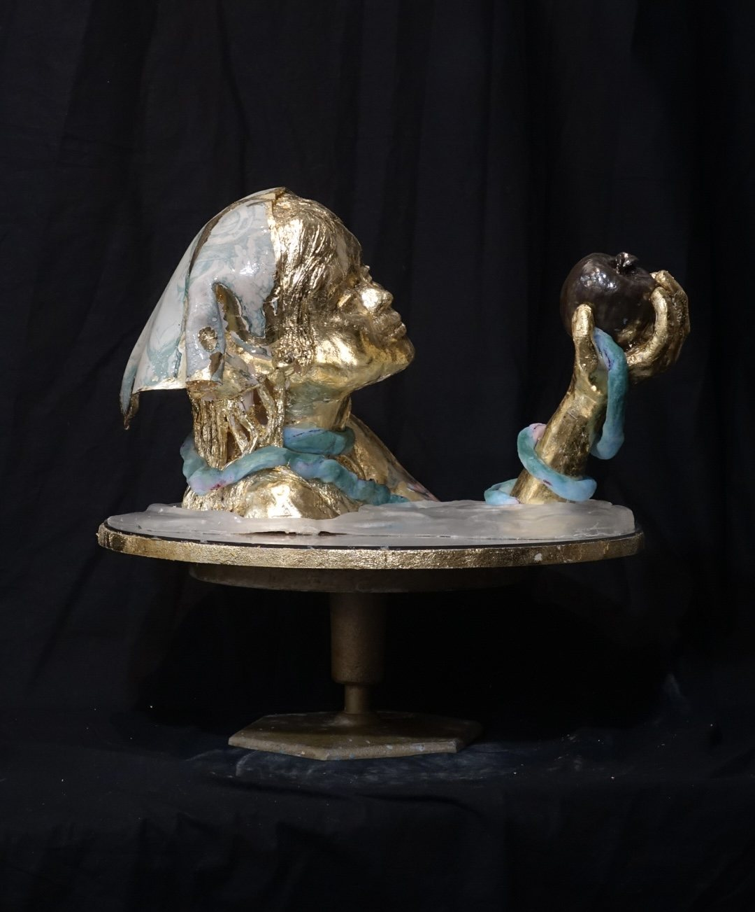
Ceramic and gold leaf
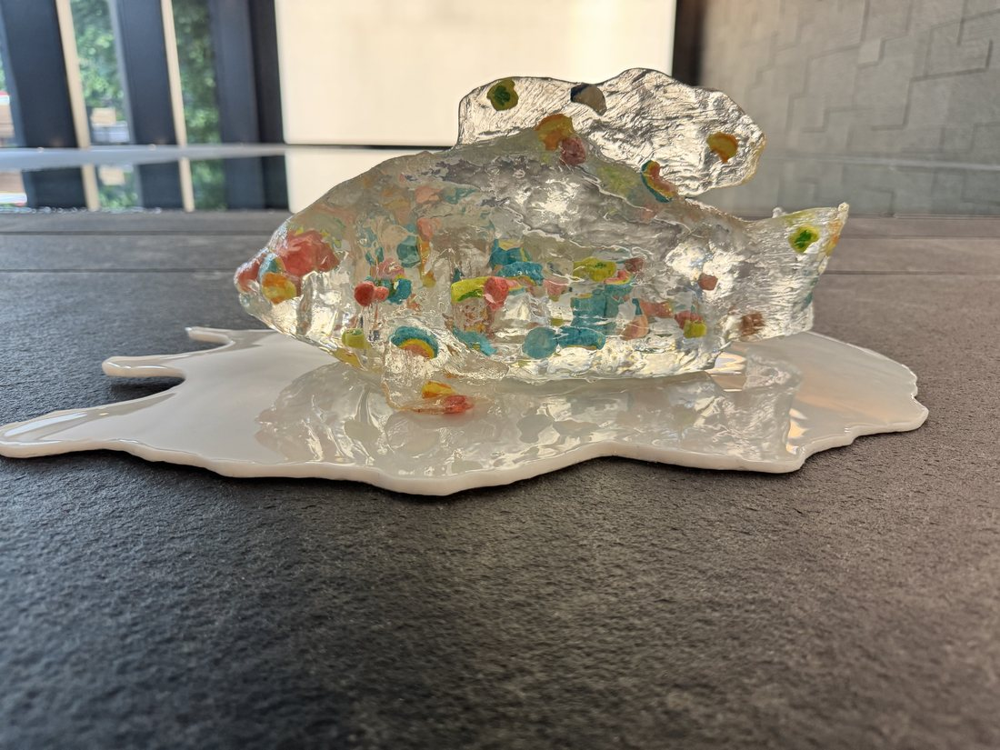
Resin and ceramic
A mother slowly consumed by the fish.
From there the work complicates.
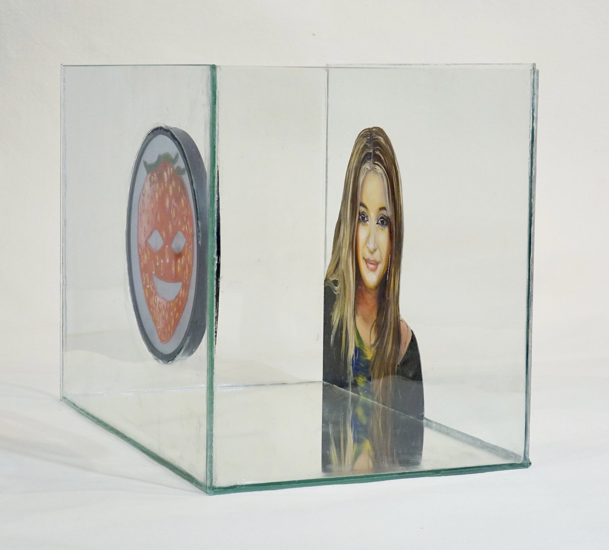
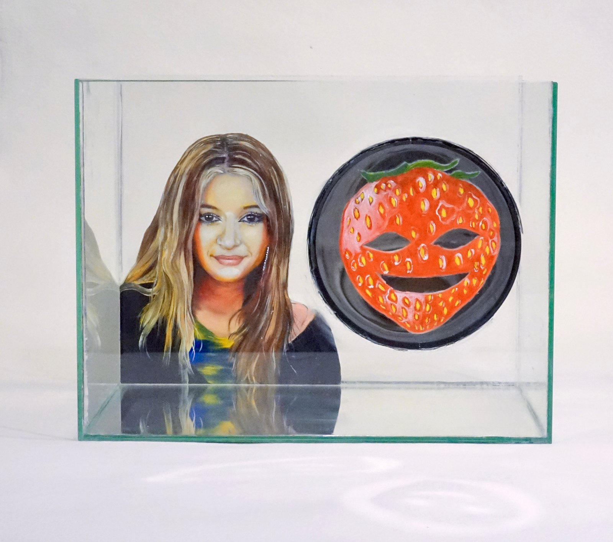
Oil on glass. The work the exhibition is named after.
A teenager's goldfish existence, seen through a Snapchat filter.
Three seconds of memory, and a face that is never quite her own.
The mask is painted on the pane in front of her, so you cannot look at her without it.
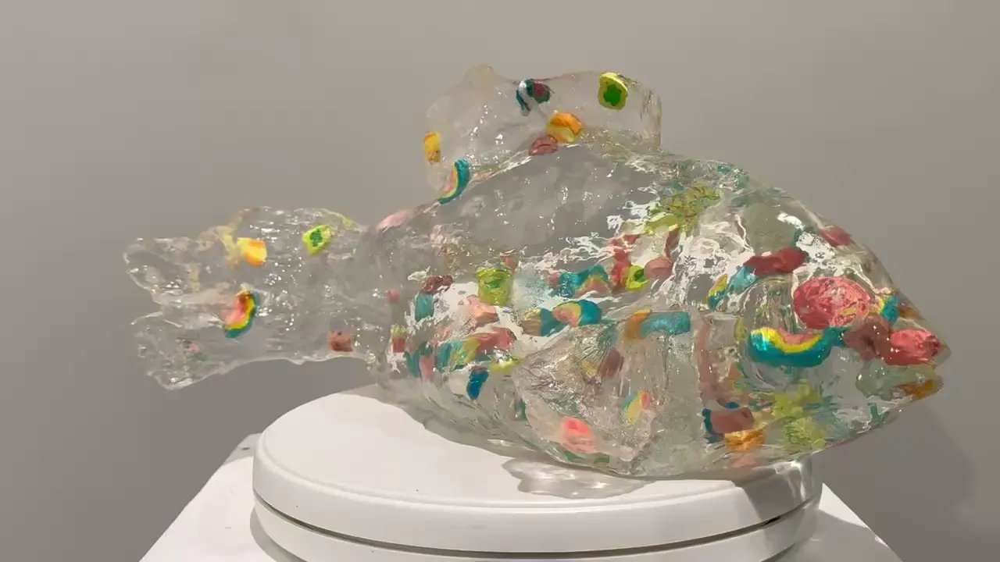
Chapter four
The architects of the feed.
Fishing for the next generation. Cast in clear resin, with the sweets still set into it, and turning under your hand like something on a slab.
Analogy
Resin, pigment and found confectionery
Unfiltered
- Opening
- Saturday 5 September, 12 to 6pm, with the artist present.
- Then
- Monday to Friday, 10 to 6pm, until 24 October 2026.
- Where
- Sonya Winner Rug Studio, 14 York Rise, London NW5 1ST.
- Works
- Oil on canvas, hand carved stone, ceramic, glass and resin.
The opening falls on the day of the York Rise Street Party, so the studio will be busy and the wine will be British. If you would like to come, reply to the invitation.
Unfiltered, 2026
The last face it found was yours.